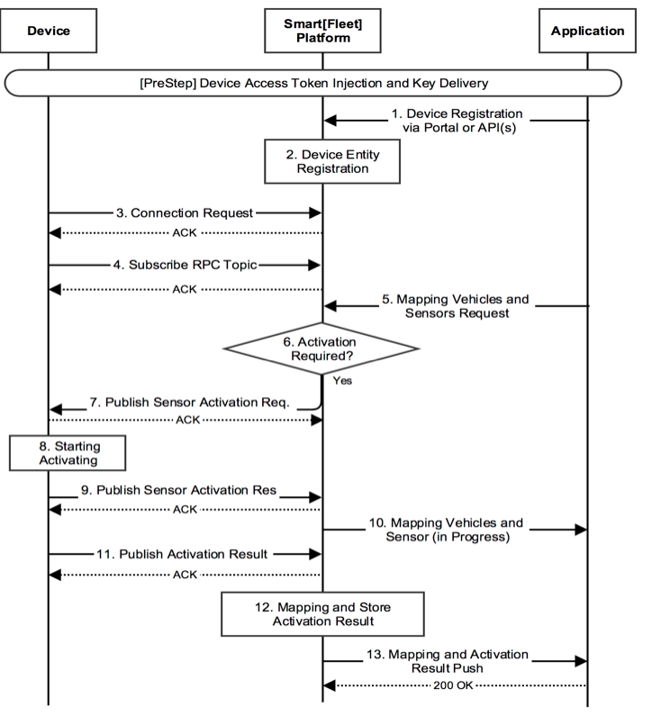
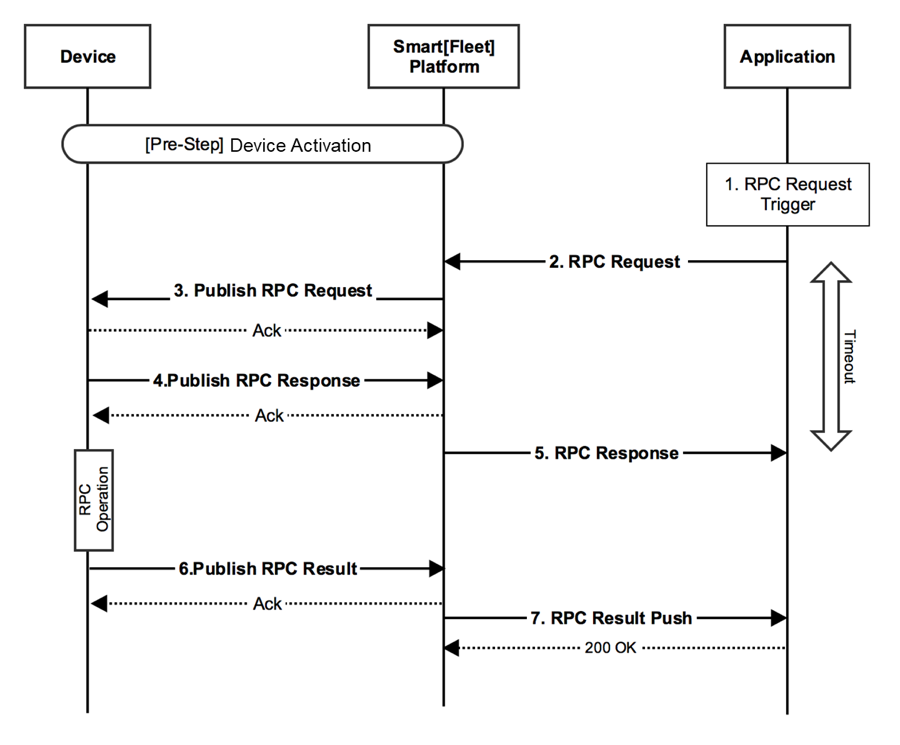

5. Device 연동 절차¶
이 매뉴얼은 Smart[Fleet] 플랫폼에 연결되는 단말장치를 개발하는 파트너들을 위한 것입니다. 장치가 어떻게 플랫폼과 통신하는지 설명합니다.
Smart[Fleet] 플랫폼을 사용하여 커넥티드 카 사업을 하고자 하는 파트너는 4. 구성요소(Entity) 등록 를 참고하십시오. App 개발자는 6. API 규격 과 7. SDK 를 참고하십시오.
이 매뉴얼에서는 단말이 Smart[Fleet] 플랫폼과 어떻게 연결되는지 설명합니다. 실제 단말과 Smart[Fleet]이 주고받는 메시지에 대한 상세한 내용은 8. 메시지 포맷 을 참고하십시오.
5.1. Device Connection¶
Smart[Fleet] 플랫폼은 단말과 연동을 위해 MQTTS 프로토콜을 사용합니다. MQTTS 프로토콜은 무선 및 낮은 대역폭 네트워크에서 저전력 기기에서 사용되는 것을 목표로 만들어진 메시징 프로토콜입니다. 자세한 내용은 MQTT.org 를 참고하시기 바랍니다.
단말이 MQTTS 프로토콜을 통해 Smart[Fleet] 플랫폼과 연동할 때 다음의 설정 값이 필요합니다.
| 구분 | Value |
|---|---|
| URL | smartfleet.sktelecom.com |
| Port | 9900 (Staging) |
| username | 할당 받은 Access Token (20자리) 값 |
| password | N/A |
| cleanSession | True |
| version | 3.1.1 |
Username 필드에는 해당 단말의 Credentials ID 값을 입력합니다. 단말의 Credentials ID 값은 Smart[Fleet] REST API 를 통해서 얻을 수 있습니다. cleanSession 필드가 true면 이전 세션 정보가 아직 존재할 경우 클라이언트와 서버에서 이전 세션 정보를 삭제합니다. MQTT 버전은 3.1.1을 사용합니다.
Example Code
const mqtt = require('mqtt');
const client = mqtt.connect('mqtts://smartfleet.sktelecom.com:8883',{
username : "",
clean : true,
rejectUnauthorized : false
});
5.2. Device Activation¶
단말과 Smart[Fleet] 플래폼이 연동되기 위해서는 단말이 Smart[Fleet]에 등록되어 있어야 합니다. 이후 단말의 종류에 따라 단말 활성화(Device Activation) 과정이 필요할 수도 있습니다.
일부 OBD 단말은 정보를 올리기 위해서는 차량과 매핑을 통해 가져올 수 있는 센서 데이터들을 설정해야 합니다. 차량의 모델, 배기량, 연료 타입 등에 따라 측정 가능한 센서 데이터의 개수와 종류가 달라질 수 있기 때문입니다. OBD가 측정 할 수 있는 센서 데이터의 종류가 100가지 있다고 가정하면 차량 A는 50가지, 차량 B는 40가지 이렇게 차량마다 측정 데이터가 다를 수 있습니다. 이를 위해 차량에 맞는 데이터만 가져오도록 설정하는 작업이 단말 활성화 절차(Device Activation)입니다.
Activation이 필요한 단말의 등록 절차, Activation이 필요하지 않는 단말의 등록 절차 를 차례대로 알아보겠습니다.
5.2.1. Activation이 필요한 단말의 등록 절차¶
센서 동작 전 센서의 활성화(Activation)가 요구되는 단말에 적용되는 등록 절차를 기술합니다.
5.2.1.1. Prestep¶
사전에 각 단말은 SKT에서 제공한 Access Token (Sensor API의 credentialsId 필드)을 보유하고 있어야 하며, Application (고객사)에서도 동일한 Access Token을 보유하고 있어야 합니다.
5.2.1.2. Procedure¶
- Application Owner가 포털이나 HTTPS API를 통하여 플랫폼에 단말의 정보를 등록합니다. 센서 등록 설명은 4.4. 센서 등록 (Sensor Registration) 절차를 참고합니다.
- 플랫폼은 1번 과정에서 요청받은 정보를 기반으로 단말을 등록합니다. 상기 등록 과정에서 오류가 발생한 경우에는 수신 받은 인터페이스에 따라 회신합니다.
- 단말을 플랫폼에 연결을 시도합니다. 세부 절차는 5.1. Device Connection 절차를 참고합니다.
- 단말이 연결되면 세션이 생성됩니다. 세션이 생성된 후 RPC 요청을 수신하기 위해 토픽을 구독합니다. MQTTS에서 토픽을 구독하면 필터에 일치하는 토픽에 대한 발행물이 클라이언트로 송신됩니다. 여기서 필터에 일치하는 발행물은 해당 단말에 대한 RPC 요청이 됩니다.
RPC 요청을 수신하는 토픽은 아래와 같습니다.
| Topic | v1/sensors/me/rpc/request/+ |
Example Code
client.subscribe("v1/sensors/me/rpc/request/+");
- 차량과 등록된 센서 간 매핑을 요청합니다. 매핑 API는 아래와 같습니다.
| POST | /api/tre/v1/sensor/{sensorId}/vehicle/{vehicleId} |
- 플랫폼에서 요청 받은 단말이 Activation이 필요한지 여부를 판단합니다. 단말의 Activation 필요 여부는 플랫폼에 단말을 등록할 때 입력한 activationRequired 필드 값에 따라 구분합니다. activationRequired 값이 true이면 Activation이 필요하다고 간주합니다.
- 상기 6번 과정에서 단말이 Activation이 필요하다고 명시된 경우 플랫폼은 해당 단말에 Activation 정보를 내려주기 위한 RPC를 제공합니다.
메시지 포맷은 8.4.2. Device Activation의 Request 항목을 참고합니다.
- 단말이 7번 단계의 Activation 요청을 수신합니다.
- 단말은 이에 따라 Activation 수행 예정이라는 메세지를 플랫폼에 전달합니다.
메시지 포맷은 8.4.2. Device Activation의 Response 항목을 참고합니다.
해당 메세지를 발송하는 토픽은 아래와 같습니다.
| Topic | v1/sensors/me/rpc/response/{Request-ID} |
| 메시지 포맷 | Response |
- 플랫폼이 고객사(포털 또는 HTTP Response)에게 9번 과정의 단말 RPC 메시지 수신 상태를 전달합니다. 이는 매핑과 Activation은 추후에 진행되는 것을 명시합니다.
- 단말이 Activation을 수행한 후에 Activation 결과를 단말이 플랫폼에 전달합니다. Activation 작업은 일반적으로 일정 시간이 걸릴 수 있습니다.
Activation 결과를 발송하는 토픽은 아래와 같습니다.
| Topic | v1/sensors/me/rpc/result/{Request-ID} |
| 메시지 포맷 | Result |
- 플랫폼은 수신한 Activation 결과를 저장하고 정상적으로 Activation이 된 경우 단말과 차량을 매핑합니다.
- 플랫폼은 12번의 결과를 고객사에 전달합니다.
5.2.2. Activation이 필요하지 않는 단말의 등록 절차¶
단말 동작 전 단말의 활성화(Activation)가 요구되지 않는 단말에 적용되는 등록 절차를 기술합니다.

5.2.2.1. Prestep¶
사전에 각 단말은 SKT에서 제공한 Access Token (Sensor API의 credentialsId 필드)을 보유하고 있어야 하며, Application (고객사)에서도 동일한 Access Token을 보유하고 있어야 합니다.
5.2.2.2. Procedure¶
- Application Owner가 포털이나 HTTPS API를 통하여 플랫폼에 단말의 정보를 등록합니다. 센서 등록 설명은 4.4. 센서 등록 (Sensor Registration) 절차을 참고합니다.
- 플랫폼은 1번 과정에서 요청받은 정보를 기반으로 단말을 등록합니다. 상기 등록 과정에서 오류가 발생한 경우에는 수신 받은 인터페이스에 따라 회신합니다.
- 단말과 플랫폼간 연결을 시도합니다. 세부 절차는 5.1. Device Connection 내용을 참고합니다.
- 단말이 연결되면 세션이 생성됩니다. 세션이 생성된 후 RPC 요청을 수신하기 위해 토픽을 구독합니다. MQTTS에서 토픽을 구독하면 필터에 일치하는 토픽에 대한 발행물이 클라이언트로 송신됩니다. 여기서 필터에 일치하는 발행물은 해당 단말에 대한 RPC 요청이 됩니다.
RPC 요청을 수신하는 토픽은 아래와 같습니다.
| Topic | v1/sensors/me/rpc/request/+ |
Example Code
client.subscribe("v1/sensors/me/rpc/request/+");
- 차량과 등록된 센서 간 매핑을 요청합니다. 매핑 API는 아래와 같습니다.
| POST | /api/tre/v1/sensor/{sensorId}/vehicle/{vehicleId} |
- 플랫폼에서 요청 받은 단말이 Activation이 필요한지 여부를 판단합니다. 단말의 Activation 필요 여부는 플랫폼에 단말을 등록할 때 입력한 activationRequired 필드 값에 따라 구분합니다. activationRequired 값이 false이면 Activation이 필요없다고 간주합니다.
- Activation이 필요없다고 판단되면 5번 과정의 매핑 요청에 따라 센서 엔티티에 센서가 연결된 차량의 식별자를 기입하여 논리적인 링크를 구성합니다.
- 플랫폼이 고객사(포털 또는 HTTPS Response)에게 센서와 차량 매핑 결과를 전달합니다.
5.3. Device RPC¶
RPC는 Remote Procedure Call의 약자로 원격에 있는 함수를 호출해주는 기능을 말합니다. Device RPC는 어플리케이션에서 원격으로 센서의 기능을 호출함으로써 제어합니다. 어플리케이션에서 요청된 단말 제어 절차는 아래와 같습니다.
5.3.1. Pre-Step¶
5.1. Device Connection 절차를 거칩니다. 단말이 정상적으로 연결되면 세션이 생성됩니다. 세션이 생성된 후 RPC 요청을 수신하기 위해 토픽을 구독합니다. MQTTS에서 토픽을 구독하면 필터에 일치하는 토픽에 대한 발행물이 클라이언트로 송신됩니다. 여기서 필터에 일치하는 발행물은 해당 단말에 대한 RPC 요청이 됩니다.
RPC 요청을 수신하는 토픽은 아래와 같습니다.
| Topic | v1/sensors/me/rpc/request/+ |
Example Code
client.subscribe("v1/sensors/me/rpc/request/+");
Device RPC 절차 이전에 5.3. Device Activation 절차를 거칩니다. 서비스 등록 단계에서 RPC 결과 및 단말 Attribute 변경 정보를 수신하기 위한 HTTP Server 주소를 기입 받습니다.
5.3.2. Procedure¶
- 고객사의 Application에서 단말 제어 요청이 발생합니다.
- 고객사의 Application이 HTTPS POST 메시지를 통해서 RPC 요청을 수행합니다. 요청 메시지 포맷은 6.2. RPC 메시지 포맷 을 참고합니다.
RPC 요청 API는 아래와 같습니다.
| POST | /api/plugins/rpc/twoway/{sensorId} |
- 플랫폼은 2번과정에서 수신한 RPC 요청 메세지를 단말에 포워딩 합니다. 이 때, 플랫폼은 RPC에 대한 요청 식별자 Request-ID를 Topic의 하나로 제공합니다.
| Topic | v1/sensors/me/rpc/request/{Request-ID} |
- 단말은 RPC 요청을 수신했다는 Ack를 플랫폼에 Return합니다. 단 해당 수신에 대한 Ack 메시지가 20초 내로 전송되지 않으면 Timeout 된 후 에러로 처리됩니다.
RPC Ack를 발송하는 토픽은 아래와 같습니다.
| Topic | v1/sensors/me/rpc/response/{Request-ID} | |
| 메시지 포맷 | Response 참조 | |
- 플랫폼은 RPC 요청 수신 결과 메세지를 포워딩하여 Application에 상기 4번의 Response 형태로 응답합니다.
- 단말은 RPC 결과를 플랫폼에 전달합니다. RPC 결과를 발송하는 토픽은 아래와 같습니다.
| Topic | v1/sensors/me/rpc/result/{Request-ID} | |
| 메시지 포맷 | Result 참조 | |
- 플랫폼은 상기 6번 과정의 Attribute가 Update 된 경우에 해당 결과를 그대로 고객사의 application에 푸시 형태로 제공합니다. 이 때 주소는 Prestep에서 정의한 HTTP Server 주소를 활용합니다.
5.4. Device Procedure¶
단말 활성화 작업까지 마쳤다면 실제로 운행 데이터를 송수신할 차례입니다. 이제 단말이 데이터를 전송하는 프로시저의 명세에 대해 알아보겠습니다.
5.4.1. Trip Data¶
센서에서 발생한 운행 기록을 위한 정보를 업로드 하는 절차를 기술합니다.

5.4.1.1. Prestep¶
본 가이드 문서 중 5.2. Device Activation 절차를 정상적으로 수행되어야 합니다.
5.4.1.2. Procedure¶
- 단말은 차량의 운행이 시작되는 순간부터 등록 시점에 명세한 주기에 따라 Microtrip 데이터를 플랫폼에 전달합니다.
플랫폼에 Microtrip 전달하는 토픽은 아래와 같습니다. QoS 값은 1로 설정합니다.
| Topic | v1/sensors/me/tre |
| 메시지 포맷 | 8.2. 센서 타입별 주기 메시지 포맷 의 Microtrip 참고 |
- 단말은 차량 운행이 종료된 후 운행 종료를 알리는 Trip 데이터를 플랫폼에 전달합니다.
플랫폼에 Trip 전달하는 토픽은 아래와 같습니다. QoS 값은 1로 설정합니다.
| Topic | v1/sensors/me/tre |
| 메시지 포맷 | 8.2. 센서 타입별 주기 메시지 포맷 의 Trip 참고 |
5.4.2. Event Data¶
센서에서 발생한 운행 이벤트 정보를 업로드 하는 절차를 기술합니다.

5.4.2.1. Prestep¶
본 가이드 문서 중 5.2. Device Activation 절차를 정상적으로 수행합니다.
5.4.2.2. Procedure¶
- 차량에서 플랫폼에 전달할 이벤트가 발생합니다.
- 1번 과정에서 발생한 이벤트를 아래 규격에 맞추어 플랫폼에 전달합니다. 이벤트는 Time Series와 Attributes 두 종류로 나눠지며 서로 다른 토픽을 사용합니다.
플랫폼에 이벤트 전달하는 토픽은 아래와 같습니다. QoS 값은 1로 설정합니다.
| Topic | v1/sensors/me/tre |
전달 가능한 이벤트는 아래와 같습니다. 메세지 포맷은 8.2.1.1 Payload Types 를 참조합니다.
- Diagnostic Information (Time Series)
- Collision warning (Driving) (Time Series)
- Collision warning (Paramsking) (Time Series)
- Battery Warning (Attributes)
- Unplugged Warning (Attributes)
- Turn-off Warning (Attributes)